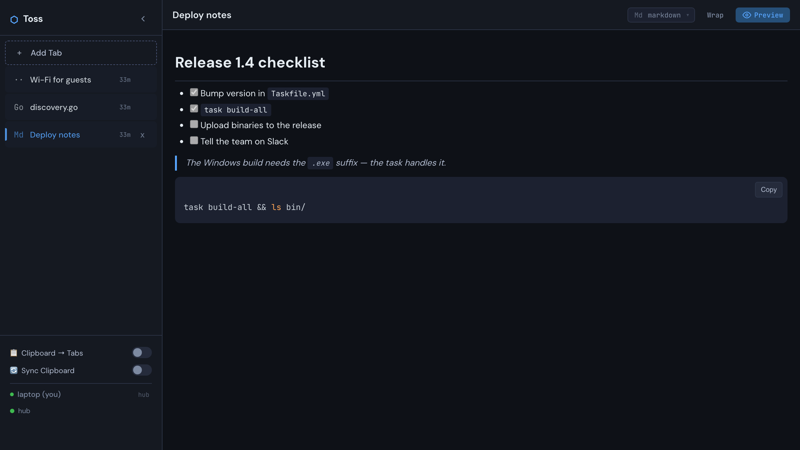
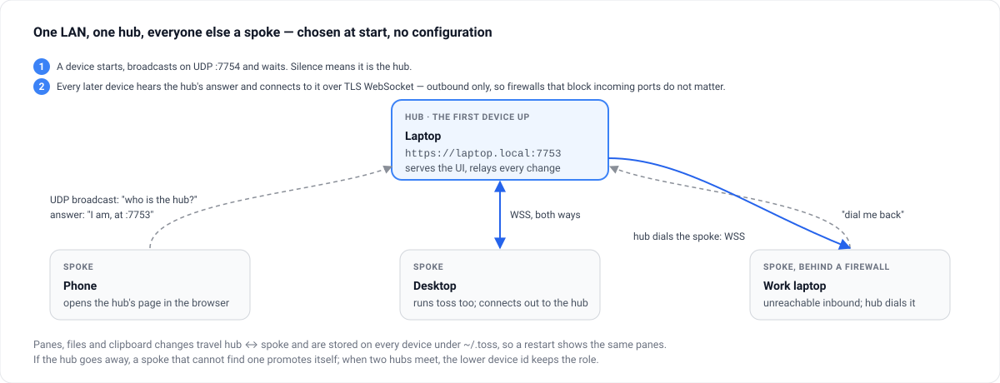
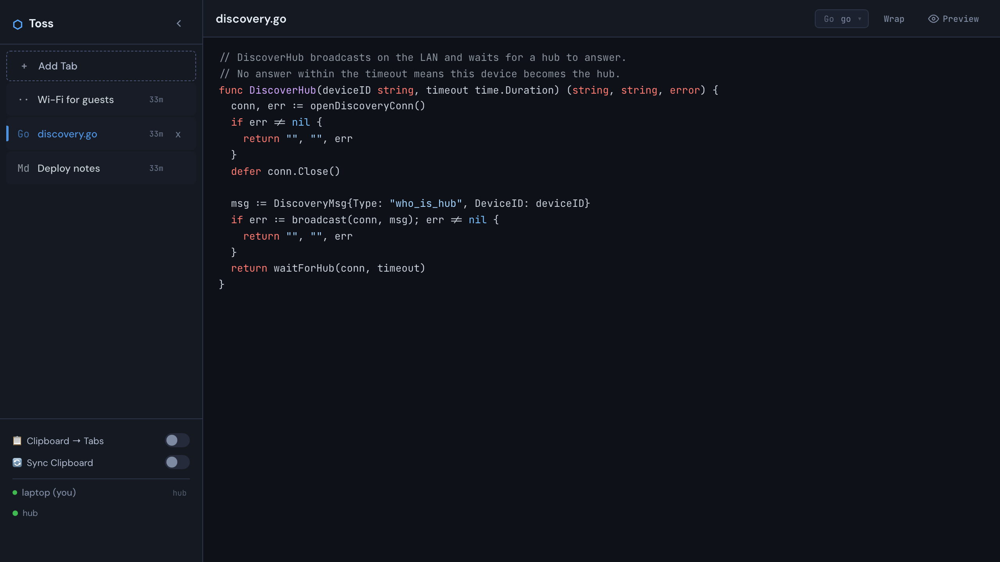

Local-network sharing · Go · MIT
The thing you need on the other machine, on the other machine.
A snippet, a screenshot, a config file, a Wi-Fi password. Toss is one binary that runs on each device on your network: paste it here, it is on every screen within the second. No accounts, no IP addresses, no configuration.

Mailing a file to yourself is slow; a chat app puts it on someone's server. Toss keeps it on your network — the first device up becomes the hub, the rest find it by broadcast, and every pane is everywhere.
Nothing to set up
Devices find each other over UDP broadcast. Start the binary, open the page, done — a phone only needs the browser.
Everything is a pane
Text, code with live highlighting, markdown with preview, pasted images, dropped files. Panes title themselves and survive restarts.
Works through one-way firewalls
Spokes connect outbound over TLS WebSocket; a device that cannot be dialled asks the hub to dial it back.
One binary, all assets inside
Go only. The frontend is embedded and vendored — no npm, no network at build time, nothing to install on the other side.
Clipboard, if you want it
Turn on Clipboard → Tabs to make a pane of every copy, or Sync Clipboard to share the clipboard itself.
Mobile friendly
Responsive layout, touch targets, a file chooser on the empty pane — the hub's page works on any phone on the network.
One hub, everyone else a spoke
Chosen at start, without a line of configuration.


- Start
A device broadcasts “who is the hub?” on UDP
:7754and waits three seconds. Silence means it is the hub: it serves the UI on:7753and relays every change. - Join
Every later device hears the hub's answer and connects to it over a TLS WebSocket. Outbound only, so firewalls that block incoming ports do not matter.
- Reverse dial
A spoke the hub cannot reach asks the hub to dial it back; the sync channel is the same afterwards.
- Lose the hub
A spoke that cannot find a hub promotes itself. When two hubs meet, the lower device id keeps the role.
Install
Go 1.22 or newer, and a LAN where UDP broadcast works — most home and office networks.
Run it
git clone https://github.com/mmdemirbas/toss.git && cd toss
task # or: go run ./cmd/toss
# then open https://localhost:7753 and accept the
# self-signed certificate onceDo the same on the next device — or just open the hub's address in a phone's browser.
Build binaries
task build # this platform → bin/
task build-all # macOS, Windows, Linux → bin/
task test # tests
./bin/toss -port 8080 # a different port (default 7753)Everything Toss writes lives under ~/.toss/: config, panes, uploaded files, the TLS certificate.
Using it
| Do | How |
|---|---|
| New pane | Add Tab, or paste an image / drop a file anywhere |
| Code with highlighting | Pick the language in the pane header, or let auto-detection choose |
| Markdown | Choose markdown and toggle Preview; every code block gets a copy button |
| Files on a phone | The file chooser on the empty pane |
| Reorder, rename, delete | Drag tabs; click the title; the × asks once |
| Word wrap | Alt + W in the editor and the preview |
| Leave preview | Escape |
| Hide the sidebar | The chevron beside the name; the state is remembered |
Made for a network you trust
Toss has no login: any device on the LAN can read and write panes. That is the point of zero-friction sharing, and the reason it must never face the internet.
| Property | Setting | Why |
|---|---|---|
| Authentication | None | Zero-friction sharing on a network you already trust |
| WebSocket origin check | Off | Any local browser may connect |
| Transport | HTTPS and WSS, self-signed certificate | No mixed-content warnings; not CA-trusted encryption |
| Markdown | Sanitised with DOMPurify | No script from a pane |